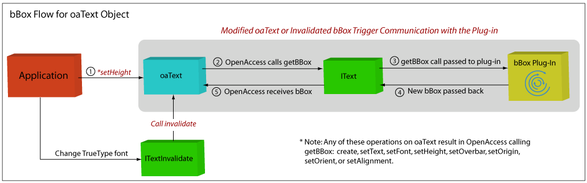
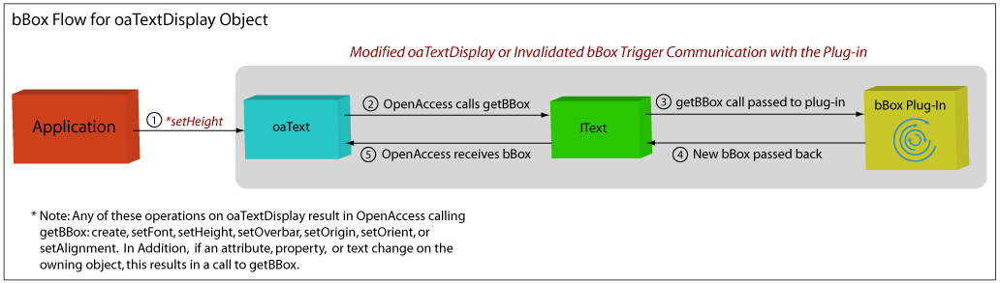
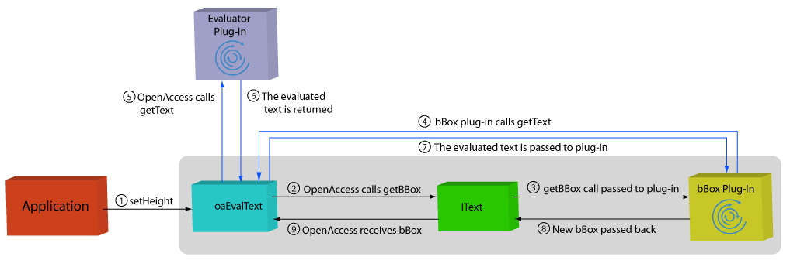

|
 |
 |
||||||
|
|
|
||||||
This document describes
Graphical applications require a great deal of flexibility in the way that they display text labels for design elements. OpenAccess provides three types of objects that support the display of text labels:
These objects are categorized as shapes because they all have characteristics common to shapes such as a layers, purposes, transforms, and bounding boxes (bBoxes). Unique to the text shapes are attributes such as font, text alignment, and height. These attributes determine how the text string appears in graphical applications. OpenAccess also uses these attributes to determine the bBox for the text based on an internal algorithm. This calculated bBox is used by editing applications for object selection as well as by the OpenAccess region query plug-in.
Applications can apply special formatting to text labels. For example, the application might use custom fonts. In such cases, the bBox calculated by OpenAccess might not be appropriate.
OpenAccess provides a plug-in infrastructure that lets an application calculate its own bBoxes for text labels. It is recommended that the application provide this capability with a plug-in component, and this document is tailored to this approach.
It is also possible to provide a text bBox calculator as an in-memory component, as explained in Creating an In-Memory Text bBox Calculator near the end of this document.
A text bBox calculator is responsible for calculating the bounding boxes of oaText, oaTextDisplay, and oaEvalText objects. The following sections describe how OpenAccess, an application built on OpenAccess, and a text bBox calculator plug-in should communicate and transfer data.
The actual tasks involved in creating the plug-in as well as an example follow these sections.
An application starts the process by modifying an oaText object, for example, by calling the oaText::setHeight function. This triggers OpenAccess to call IText::getBBox(), which starts the process of recalculating the bBox. The oaText object is passed through the IText interface to the bBox calculator. The calculator then accesses attributes such as the height and origin of the oaText object in order to calculate the bBox.
The bounding box is returned to OpenAccess through the IText interface. OpenAccess caches and persistently stores this bBox on the object. Note that the plug-in is responsible for calculating bBoxes for all text objects—not only the ones that have been formatted by the application.

An application might alter a text label in a way that is not understood directly by OpenAccess. For example, the application might use TrueType fonts to visually display text labels. If there are changes to the TrueType display attributes and the application wants these changes reflected in the bBox, the application must invalidate the text bBox, which causes the plug-in to recalculate it. The ITextInvalidate class provides this functionality. When a text bBox calculator plug-in is registered or loaded, it receives a handle to the ITextInvalidate interface through the IText::init function. The plug-in should provide a way to pass this ITextInvalidate object to the application, which can then call the appropriate ITextInvalidate::invalidate function.
Graphical applications can use oaTextDisplay objects to display text strings that represent attributes and properties of design objects.
An oaTextDisplay object can be one of the following:
If the application changes the attribute of the object being displayed, the bBox must be recalculated. The flow of information is the same as the flow of information for oaText objects shown in the previous figure. The difference is in the various actions that trigger the flow (represented by in the following figure.)

In another scenario, the application might change the name of the owning net for an oaAttrDisplay object, in which case the bBox must be recalculated. Because oaAttrDisplay objects display name mapped strings, the plug-in must select the appropriate name space to perform the name mapping and calculate the bBox based on the name mapped string.
Note that the application can also invalidate the bBox as described in Invalidating a bBox.
For oaEvalText objects, another plug-in is used for evaluating the text string. This plug-in is accessed whenever getText is called on an oaEvalText object.
An application starts the process by modifying the oaEvalText object. This triggers OpenAccess to call IText::getBBox(). The oaEvalText object is passed through the IText interface to the bBox calculator. The bBox calculator calls getText, which calls the text evaluator plug-in. The evaluator plug-in passes the evaluated text string back to oaEvalText, and then to the bBox plug-in. The bBox is returned to OpenAccess through the IText interface. OpenAccess caches and persistently stores this bBox on the object.

Note that the application can also invalidate the bBox as described in Invalidating a bBox.
Before starting this project, you might want to read How to Write a Plug-In, which is a more generic document describing the general concept of plug-ins and how they work.
You can create a text bBox calculator plug-in by creating a shared library that is loaded by OpenAccess at runtime. The shared library must do the following:
In addition, you must Create a plug-in registration file.
OpenAccess provides the oaCommon::Factory<T> templated class for defining a factory object for a plug-in. The factory object is used to create instances of a plug-in. Each plug-in has a classID, which is stored in a factory table. When OpenAccess needs to create an instance of a plug-in, it uses the classID to find the factory for the plug-in. For more information about creating a plug-in factory, see Understanding the Plug-in Factory in How to Write a Plug-in.
You must also implement the getClassObject entry point function. When called, this function returns a pointer to the plug-in factory. For more information about implementing the getClassObject entry point function, see Implementing the Entry Point Function in How to Write a Plug-in.
To create a text bBox calculator plug-in, you must define a new class derived from the PlugInBase<IText> class. The new class must implement all virtual functions of the IText class. Refer to the API documentation for IText for a detailed description about these virtual functions.
Applications can use the oaTextLink class to register a text bBox calculator plug-in. Only one such plug-in can be registered per session. If an application registers a plug-in, it is recommended that this be done after the call to oaDesignInit, but before a design is opened.
This function registers the text bBox calculator plug-in:
setIText(const oaString &plugInName)
If an application does not register a plug-in, OpenAccess loads the default bBox calculator plug-in. An application can denote their bBox plug-in as the default plug-in. Refer to Step 7 in the Example for details.
The plug-in registration file registers the plug-in shared library. The registration file can be installed in $(OA_HOME)/data/plugins when the plug-in shared library is installed. Alternatively, the OA_PLUGIN_PATH environment variable can be used to reference a .plg file outside of $(OA_HOME)/data/plugins. Refer to Writing the Plug-In Registration File in How to Write a Plug-In for more information.
A plug-in is a shared library that is installed in the OpenAccess installation hierarchy in the $(OA_HOME)/data/plugins directory. Applications load the plug-in at runtime to select a customized implementation. The following describes the steps for creating a plug-in.
extern "C" long getClassObject(const char *classID,
const Guid &interfaceID,
void **ptr);
long
getClassObject(const char *classID,
const Guid &interfaceID,
void **ptr)
{
return FactoryBase::getClassObject(classId, interfaceID, ptr);
}
class myIText : public PlugInBase<IText> {
public:
virtual void getBBox(const oaText *text,
oaBox &box);
virtual void getBBox(const oaTextDisplay *textDisplay,
oaBox &box);
virtual void getName(oaString &name);
virtual void init(ITextInvalidate *textInvalidate);
.
.
.
};
virtual bool validate();
class myIText : public PlugInBase<IText> {
.
.
.
private:
static Factory<myIText> myFactory;
};Factory<myIText> myIText::myFactory("myIText")
myIText.plg with the following contents:
<?xml version="1.0" encoding="utf-8" ?> <plugIn lib="myAppTextLibrary"/>The registration file can be installed in $(OA_HOME)/data/plugins when the plug-in shared library is installed. Alternatively, the OA_PLUGIN_PATH environment variable can be used to reference a .plg file outside of $(OA_HOME)/data/plugins. Refer to Writing the Plug-In Registration File in How to Write a Plug-In for more information.
<?xml version="1.0" encoding="utf-8" ?> <plugIn treatAs="myAppTextLibrary"/>
To create an in-memory text bBox calculator:
class myIText : public PlugInBase<IText> {
public:
virtual void getBBox(const oaText *text,
oaBox &box);
virtual void getBBox(const oaTextDisplay *textDisplay,
oaBox &box);
virtual void getName(oaString &name);
virtual void init(ITextInvalidate *textInvalidate);
virtual bool validate();
};
myIText *myText = new myIText;
oaTextLink::setIText(myText);
Copyright © 2001-2010 Cadence Design Systems, Inc.
All rights reserved.